Pour accéder aux paramètres de votre compte, vous devez d'abord ouvrir le menu utilisateur depuis l'interface principale de Slack.
-
aConnectez-vous à Slack et assurez-vous d'être sur l'interface principale de votre espace de travail.
-
bCliquez sur votre avatar ou vos initiales situées en bas à gauche de la barre latérale pour ouvrir le menu de votre profil.
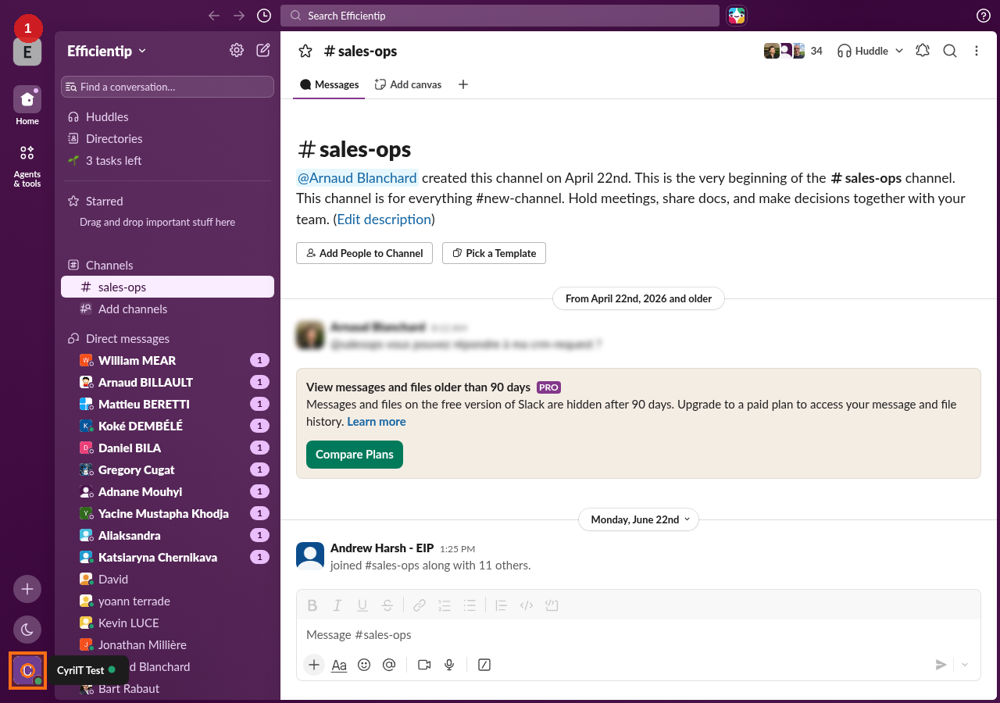
Le menu utilisateur vous donne accès aux paramètres de votre compte Slack.
-
aDans le menu déroulant qui apparaît, repérez l'option « Account settings » (Paramètres du compte).
-
bCliquez sur « Account settings » pour ouvrir la page de gestion de votre compte dans votre navigateur web.
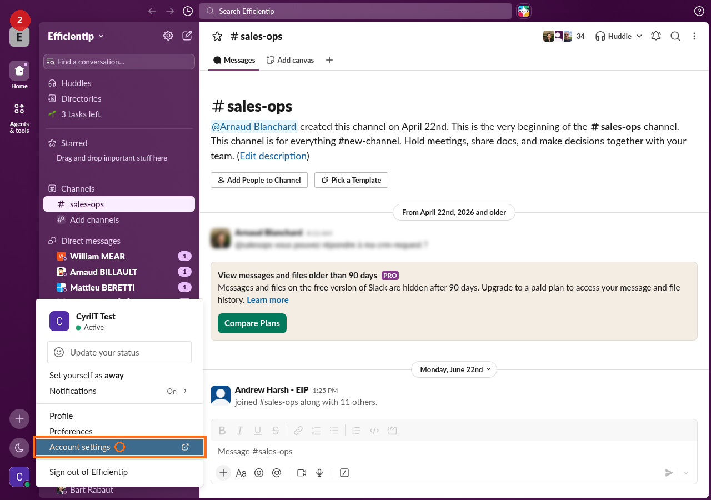
La page des paramètres du compte regroupe plusieurs sections, dont celle dédiée à l'adresse e-mail.
-
aSur la page « Account » qui s'ouvre dans votre navigateur, repérez la section intitulée « Email Address ».
-
bVérifiez que l'adresse e-mail affichée sous « Your email address is » correspond bien à votre adresse actuelle.
-
cCliquez sur le bouton « expand » situé à droite de la section « Email Address » pour déplier le formulaire de modification.
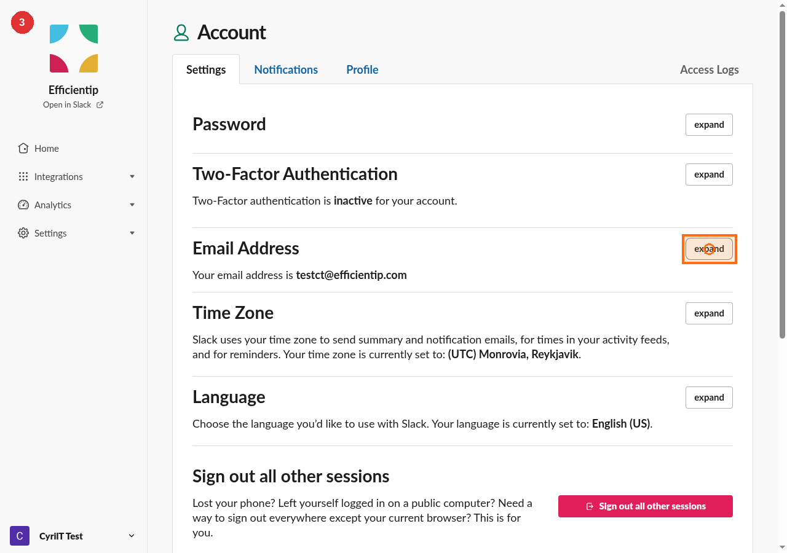
En cliquant sur « expand », un formulaire apparaît avec les champs nécessaires pour modifier votre adresse e-mail.
-
aAprès avoir cliqué sur « expand », vérifiez que le formulaire affiche bien deux champs : « Current Password » et « New Email Address ».
-
bAssurez-vous également que le bouton « Update Email » est visible en bas du formulaire.
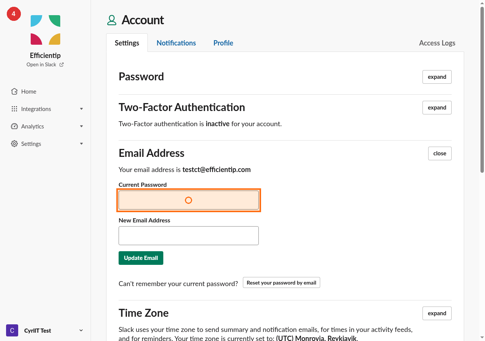
Si vous ne vous souvenez plus de votre mot de passe actuel, Slack propose une option pour le réinitialiser par e-mail avant de modifier l'adresse.
-
aSi vous ne connaissez pas votre mot de passe actuel, cliquez sur le bouton « Reset your password by email » situé sous le formulaire.
-
bSlack enverra automatiquement un e-mail de réinitialisation à votre adresse e-mail actuelle.
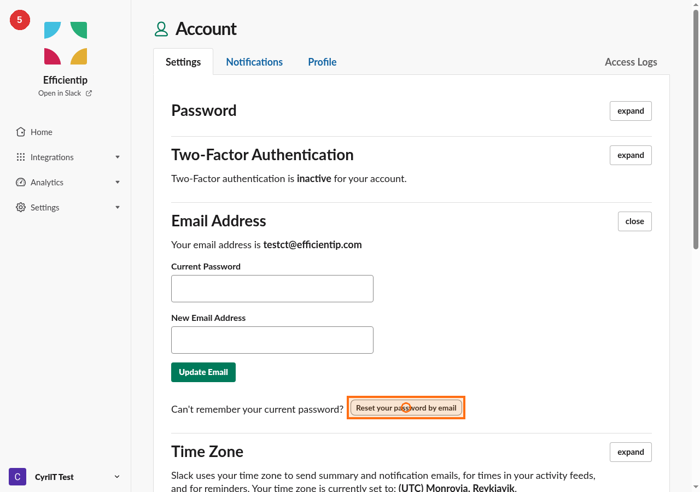
Après avoir demandé la réinitialisation du mot de passe, vous devez consulter votre boîte de réception pour retrouver l'e-mail envoyé par Slack.
-
aOuvrez votre client de messagerie (par exemple Gmail) dans un nouvel onglet de votre navigateur.
-
bConnectez-vous si nécessaire à votre boîte de réception.
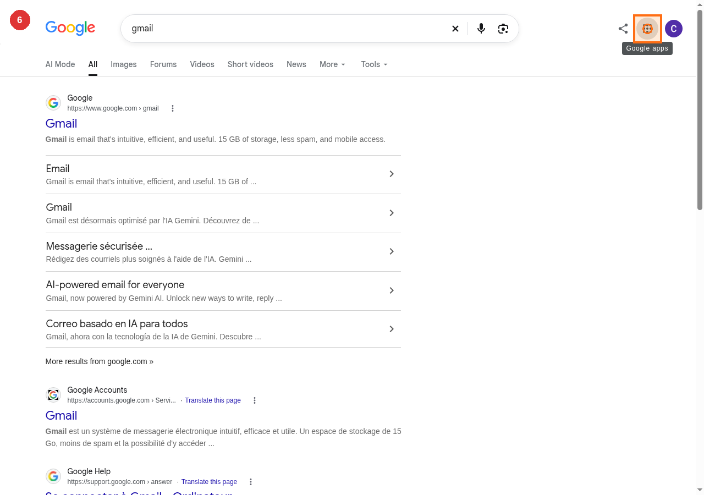
Slack vous envoie un e-mail contenant un lien pour choisir un nouveau mot de passe.
-
aDans votre boîte de réception, repérez l'e-mail intitulé « Reset your password » envoyé par Slack.
-
bCliquez sur cet e-mail pour l'ouvrir et accéder à son contenu.
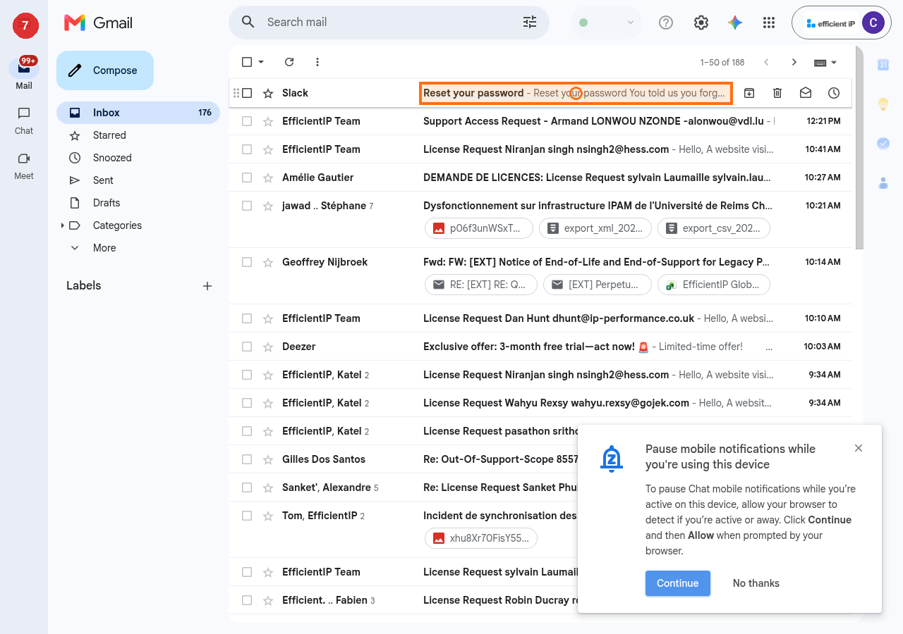
Des fenêtres de notification peuvent apparaître dans votre navigateur et masquer le contenu important.
-
aSi une fenêtre contextuelle de notification apparaît (par exemple une demande de notifications mobiles), cliquez sur le bouton « Close » (×) pour la fermer.
-
bAssurez-vous que le contenu de l'e-mail de réinitialisation est bien visible.
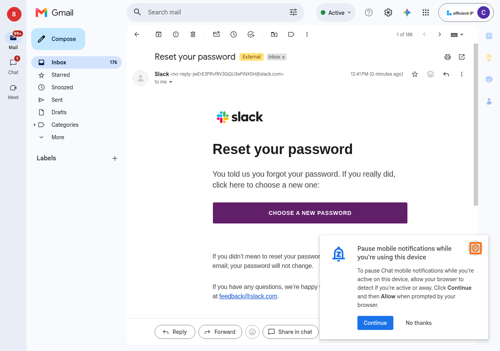
L'e-mail de Slack contient un bouton permettant de définir un nouveau mot de passe.
-
aDans le corps de l'e-mail « Reset your password », repérez le bouton violet intitulé « CHOOSE A NEW PASSWORD ».
-
bCliquez sur ce bouton pour être redirigé vers la page de réinitialisation du mot de passe Slack.
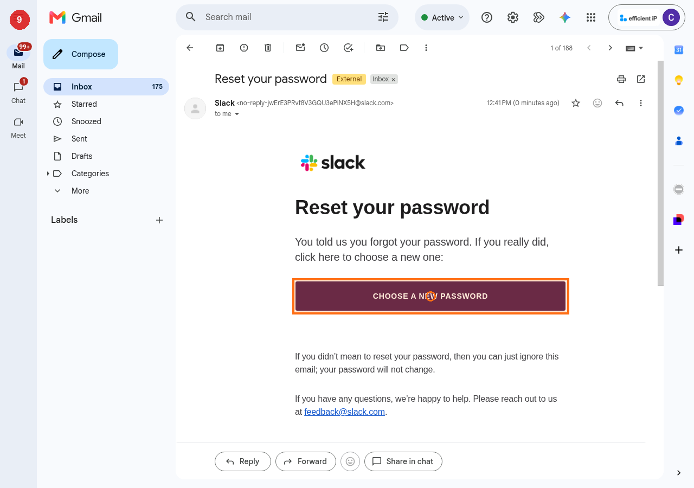
La page de réinitialisation vous invite à définir un nouveau mot de passe pour votre compte Slack.
-
aSur la page « Password Reset » de Slack, cliquez dans le champ « New Password ».
-
bSaisissez votre nouveau mot de passe en veillant à ce qu'il soit suffisamment robuste (l'indicateur de force doit afficher « Great »).
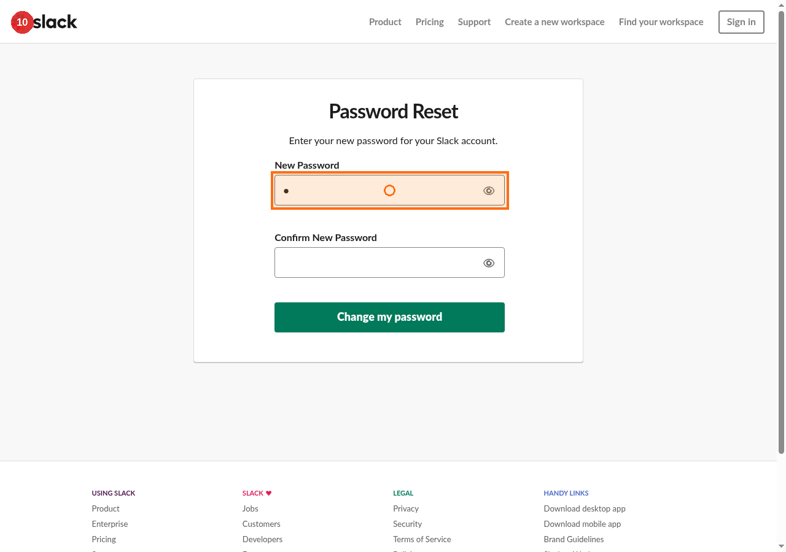
Vous devez saisir une seconde fois votre nouveau mot de passe pour confirmer la modification.
-
aCliquez dans le champ « Confirm New Password ».
-
bSaisissez à nouveau exactement le même mot de passe que celui entré dans le champ précédent.
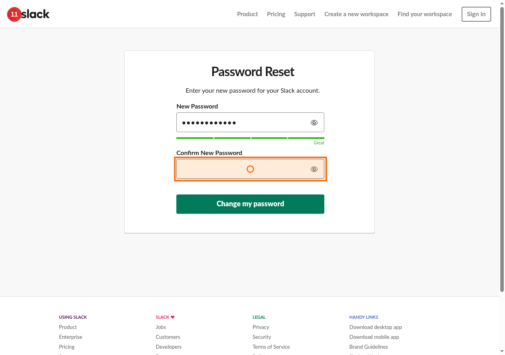
Une fois les deux champs remplis, vous pouvez valider le changement de mot de passe afin de pouvoir ensuite modifier votre adresse e-mail.
-
aVérifiez que les deux champs « New Password » et « Confirm New Password » contiennent le même mot de passe.
-
bCliquez sur le bouton vert « Change my password » pour valider la réinitialisation.
-
cUne fois le mot de passe modifié, retournez sur la page « Account settings » de Slack, développez à nouveau la section « Email Address », renseignez votre nouveau mot de passe dans le champ « Current Password », saisissez votre nouvelle adresse e-mail dans le champ « New Email Address », puis cliquez sur « Update Email » pour finaliser le changement d'adresse e-mail.
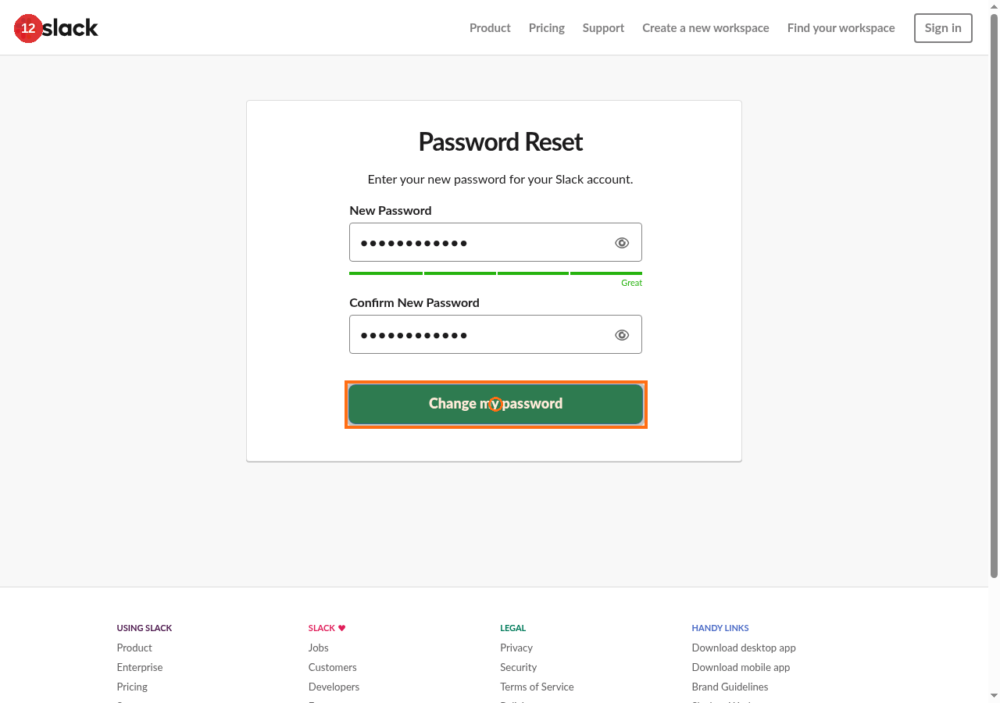
Cliquer sur « CyrilT Test »
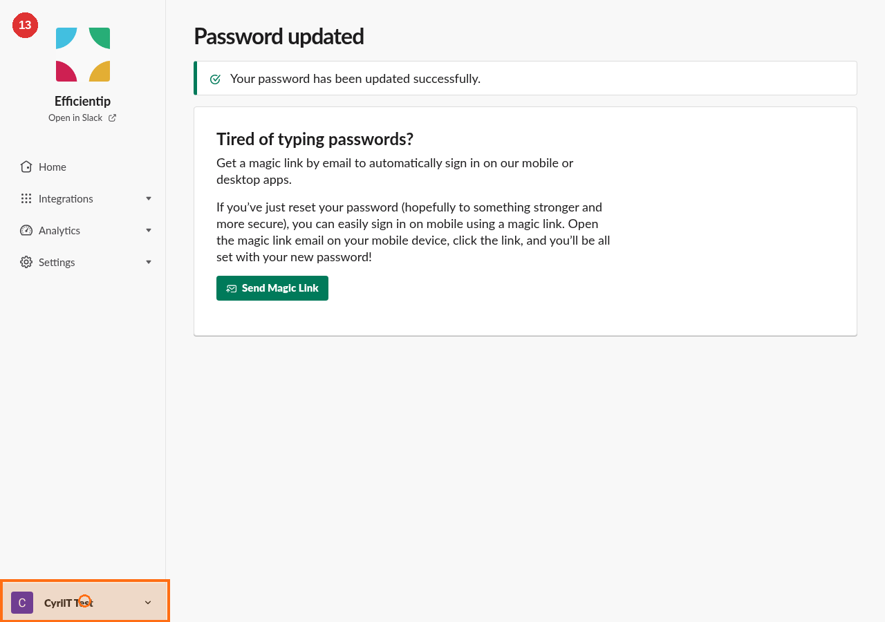
Cliquer sur « CyrilT Test Account settings »
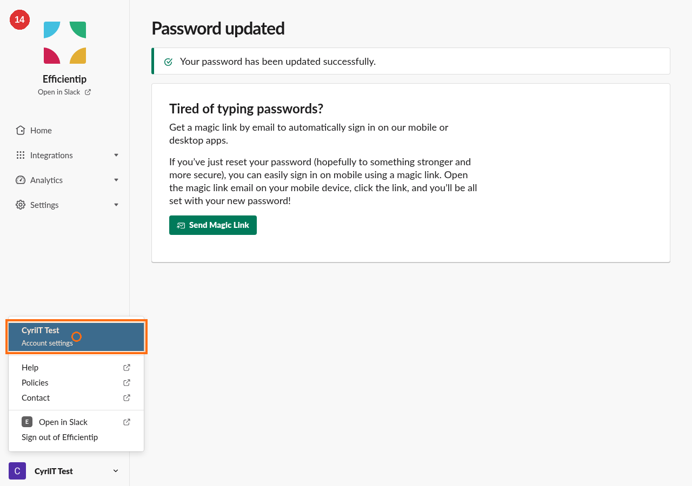
Cliquer sur « expand »
Cliquer sur « »
Cliquer sur « »
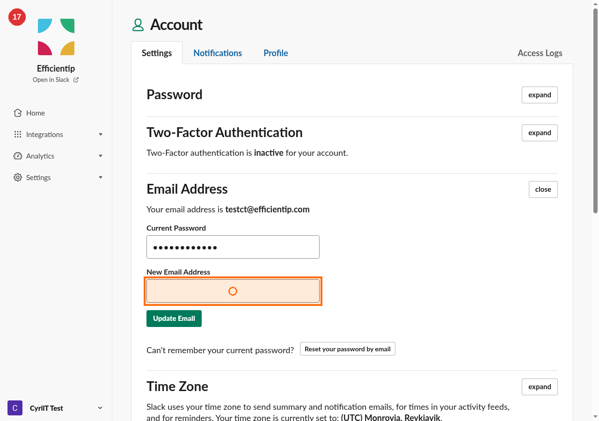
Cliquer sur « Update Email »
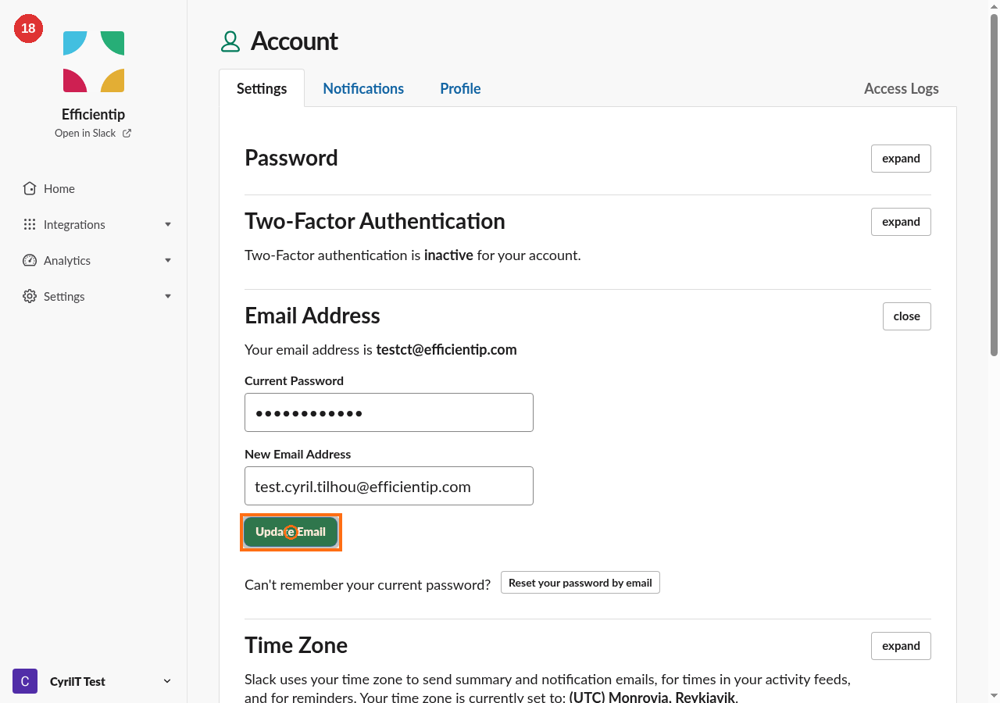
Enregistrez le changement et validez votre nouvel email.
-
aCliquez sur Enregistrer / Save.
-
bOuvrez le lien de confirmation reçu par email.